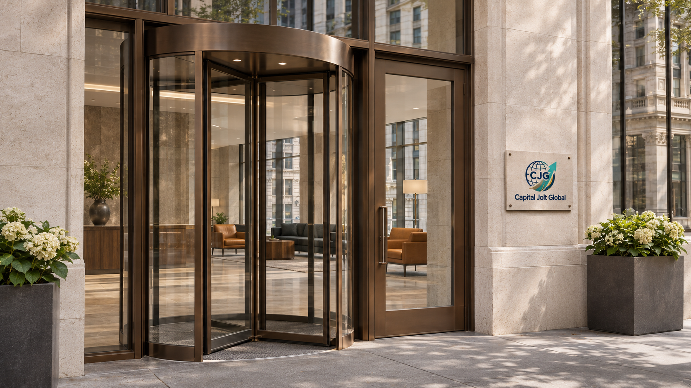
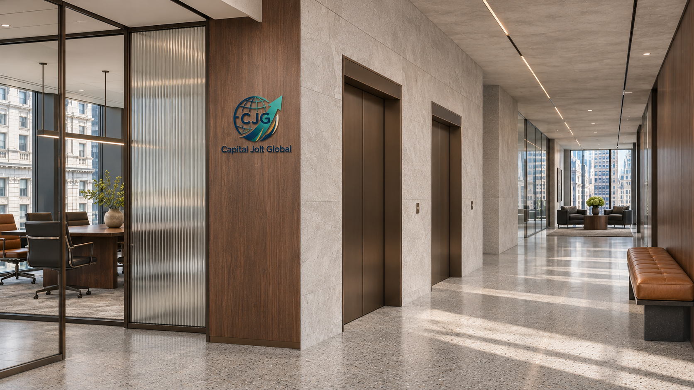
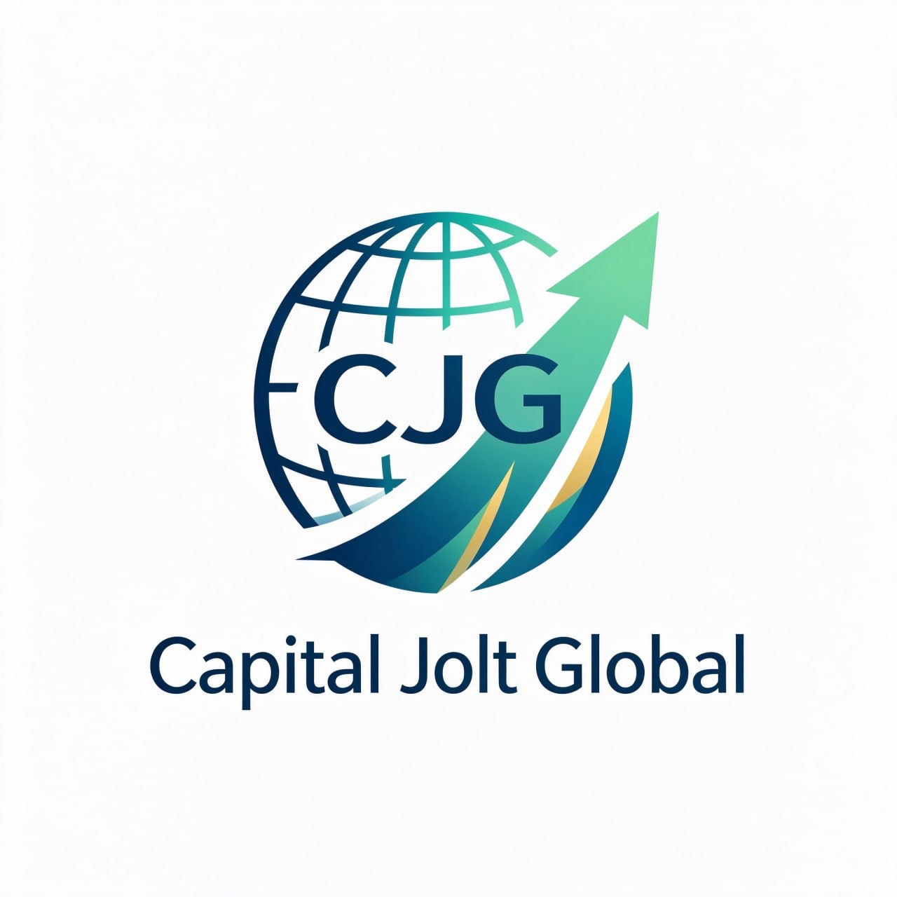

以專業研究，
連結全球的可能。
認識 Capital Jolt Global（CJG）的企業理念、核心方向與國際布局。從紐約出發，讓市場研究、科技與專業交流彼此連結。
讓研究有深度，
讓視野更開闊。
CJG 成立於2021年，總部位於美國紐約曼哈頓中城，以全球金融市場為核心，整合金融科技、投資研究與資產管理理念。
面對快速變化的市場，單一消息不足以解釋全貌。我們重視經濟環境、企業基本面、產業趨勢與風險之間的關係，以持續研究作為理解市場的起點。

研究、紀律、創新。
也是我們看待長期價值的方式。
專業研究
從可信的資訊與清楚的問題出發，理解企業、產業與市場環境，不用單一價格變化取代完整分析。
風險與紀律
將投資期限、流動性與不利情境納入思考，讓風險成為研究框架的一部分。
科技與交流
探索數據工具的應用，並透過教育、案例與專業對話，促進知識分享與人才成長。
從台灣產業，
看見國際市場。
以美國市場為發展基礎，並規劃以台灣作為亞洲市場的重要交流起點。
台灣在半導體、電子製造與 AI 供應鏈中的產業經驗，能與國際研究資源形成有價值的對話。CJG 希望透過專業課程、研究與交流，連結不同市場的知識與人才。
閱讀台灣與國際市場專題以紐約為起點
成立 Capital Jolt Global，探索金融科技與專業投資研究的結合。
深化市場與產業研究
關注全球經濟、科技創新與多元資產，持續建立研究脈絡。
推動交流與人才培養
透過投資教育、策略交流及百億基金發展目標，規劃國際資源整合。
讓專業的對話，
有更好的交流空間。
企業形象與空間展示，呈現 CJG 對專業交流、研究協作與品牌一致性的重視。

企業空間 · 連結與交流

品牌識別 · 全球視野
企業與投資公司簡介
Capital Jolt Global（CJG）｜企業與投資公司簡介
一、企業概況
Capital Jolt Global（簡稱 CJG） 成立於2021年，總部位於美國紐約曼哈頓中城，是一家以全球金融市場為核心，結合金融科技、投資研究與資產管理理念的金融服務公司。
CJG 致力於整合傳統金融市場的專業經驗與新興科技應用，持續關注全球經濟環境、資本市場變化及產業發展趨勢，並運用人工智慧、大數據分析及區塊鏈等技術，提升市場研究、投資分析與風險管理的效率，探索金融科技與資產管理相結合的創新模式。
面對全球金融市場快速變化，以及人工智慧、半導體與科技產業持續發展，CJG 認為，專業研究、數據分析與風險控管，是建立長期投資價值的重要基礎。因此，公司持續整合國際市場資訊、專業研究資源與投資策略，希望為不同需求的客戶提供更全面的金融資訊與投資服務。
二、核心業務領域
CJG 的業務發展涵蓋全球市場研究、資產配置、科技產業投資及金融科技應用等領域，主要包括以下五大方向：
1. 全球資產配置與投資研究
持續追蹤美國、台灣及其他主要國際金融市場，透過總體經濟分析、企業基本面研究、產業趨勢判斷及市場資金流向觀察，掌握不同市場的投資環境與發展機會，並以多元資產配置及風險管理為核心，建立更完整的投資研究架構。
2. 科技與成長型產業研究
重點關注人工智慧、半導體、電子製造、雲端運算及金融科技等具備長期發展潛力的產業。透過追蹤產業技術演進、企業營運表現及全球供應鏈變化，深入分析科技創新對資本市場帶來的影響，尋找具有研究價值的成長型企業與產業機會。
3. 一級市場與創新項目研究
關注 Pre-IPO、IPO、IEO 及私人股權等市場領域，研究創新企業的商業模式、發展潛力、融資需求及市場環境，持續拓展多元化的投資研究方向，並關注新興金融產品與創新項目的發展。
4. 金融科技與數據分析
結合人工智慧、大數據及區塊鏈等技術，探索智能化市場分析、數據整合、投資研究及風險管理工具的應用。透過科技提升資訊處理與研究效率，協助建立更具系統性與數據支持的分析架構。
5. 投資教育與專業交流
重視投資知識的普及與專業人才培養，計畫透過線上課程、市場研究報告、投資策略分享及專業交流活動，讓更多投資者認識全球金融市場，了解不同投資策略的運作邏輯，並逐步建立正確的投資觀念與風險管理意識。
三、全球化發展布局
CJG 以美國市場作為重要發展基礎，並計畫以台灣作為亞洲市場的重要交流起點，逐步整合美國與亞洲的市場研究資源、專業人才及產業合作夥伴。
台灣在半導體、電子製造及人工智慧供應鏈中具有重要地位，同時也是連接美國與亞洲資本市場的重要節點。CJG 看重台灣的產業基礎與市場發展潛力，希望結合國際市場研究經驗與本地產業優勢，透過投資教育、專業課程及市場交流，協助台灣投資者拓展國際視野，進一步認識全球資本市場的發展趨勢。
未來，公司也將持續探索與國際金融機構、科技企業及專業研究團隊的合作機會，逐步建立跨市場的資訊交流與資源整合平台，推動品牌及業務的國際化發展。
四、企業願景與未來發展
CJG 相信，金融服務的長期價值不僅來自對市場機會的掌握，更建立於專業研究、投資紀律、風險管理與持續創新之上。
在未來發展方面，公司將持續深化金融科技應用，拓展全球市場布局，並推動以新台幣100億元為規模目標的基金發展計畫。透過「百億基金PK賽」等專業交流活動，展示不同投資理念與策略體系，發掘具備專業能力的投資人才，並為未來基金管理及國際業務發展累積經驗與資源。
長期而言，CJG 期望建立一個結合金融科技、專業投資研究、人才培養與國際資源整合的金融服務平台，讓專業知識與創新技術成為推動企業發展的重要力量。
Capital Jolt Global——連結全球資本，洞察市場趨勢，以專業研究與科技創新，開創金融服務的更多可能。